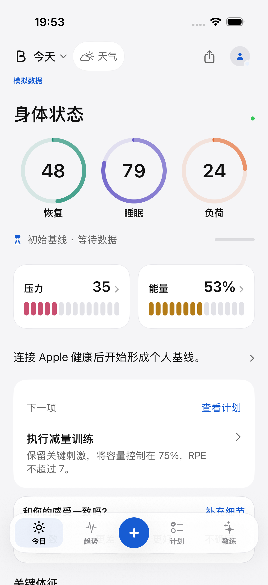
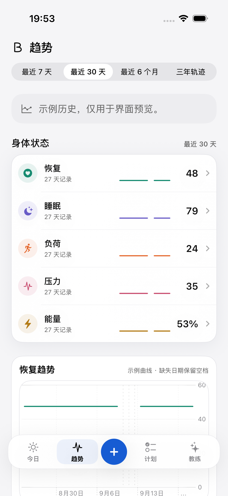
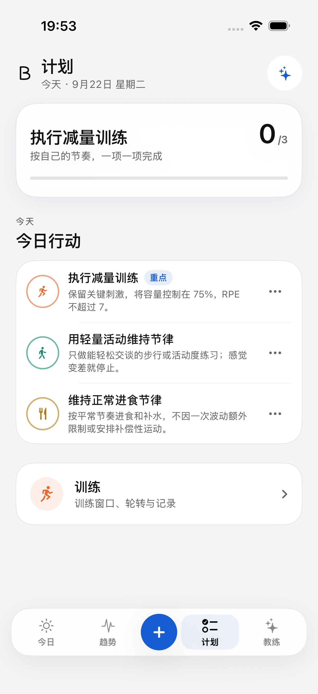
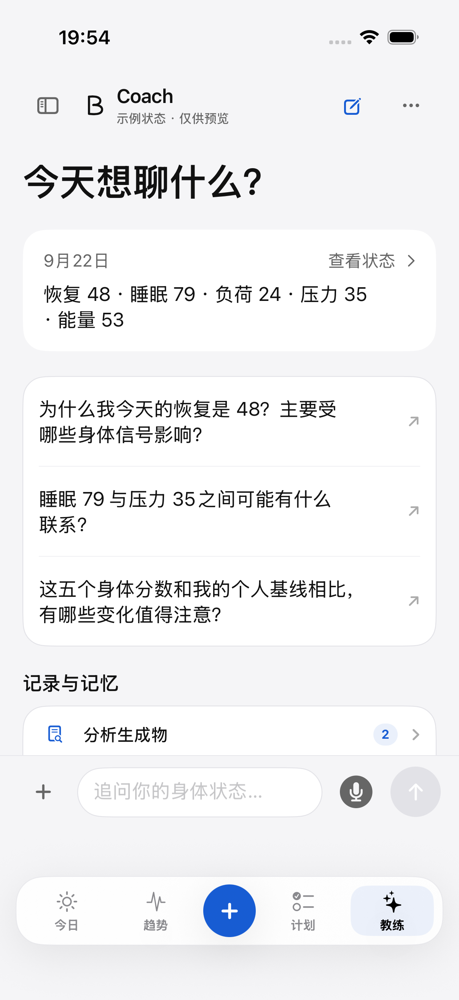
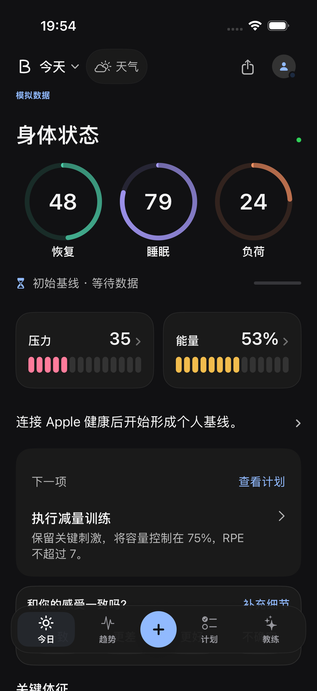
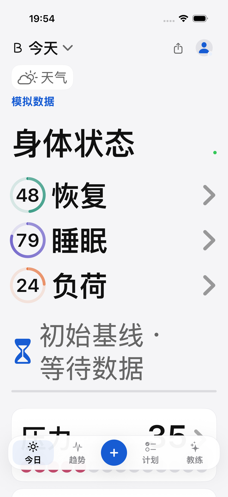

这是已写入 App 的真实 SwiftUI 页面。保留你选的 A 结构，采用系统字体、大数字、统一圆角，减少重复小字与装饰。
截图来自 iPhone 17 Pro 模拟器，全部使用示例输入。它们说明界面实际运行的样子，不代表你的健康状态。
五项独立状态、单句解释与下一项行动

同一时间范围下的五项状态与真实图表组件

用户可编辑的三项行动，保存失败保留内容

紧凑事实摘要，让对话成为主要内容

相同信息结构与自适应颜色

主内容遵循动态字号，三项指标改为纵向
